Agency management you own.
The open-source agency management system for independent P&C agencies. The brand is an open door with the lights on: walk in free, leave with every record. Usage rules are in BRAND.md.
Mark
Dark square on light backgrounds, bone square on dark. One-color and square-less glyph versions on the right. Works down to 16 px.
Lockups
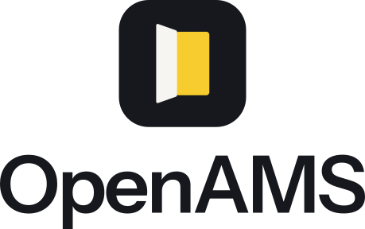
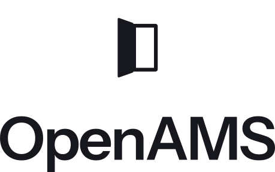
Last tile: clear space is one quarter of the mark's height on every side.
Color
Graphite and bone carry the surfaces. Saffron is the light. Clay is the glow and the Relay connection. Denim is for links and information. Every text pair passes WCAG AA; see the table in BRAND.md.
Tokens in use, light and dark
General liability renews Dec 4
General liability renews Dec 4
Both cards use the same markup; data-theme switches every token through light-dark().
Type
Instrument Sans SemiBold · display and headings · SIL OFL 1.1
Accounts, policies, renewals, servicing and commissions in one calm place. A new CSR is productive on day one.
CA-0451-09 · $11,940.00 · GET /v1/policies
Instrument Sans Regular for text · JetBrains Mono for numbers and IDs · both SIL OFL 1.1
Icons
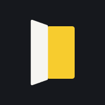
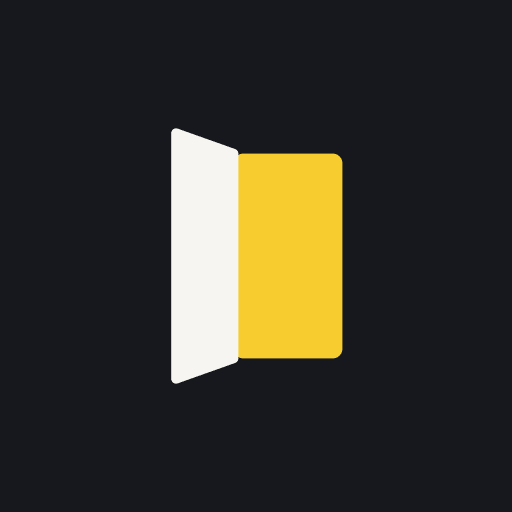
favicon.svg and .ico · apple-touch-icon (180) · icon-192 and -512 · maskable 512 shown under a circle mask.
README header
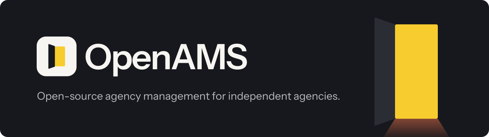
README header, used on GitHub's light and dark themes
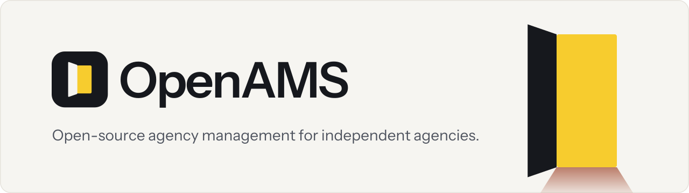
Light variant, for light pages outside GitHub
Social
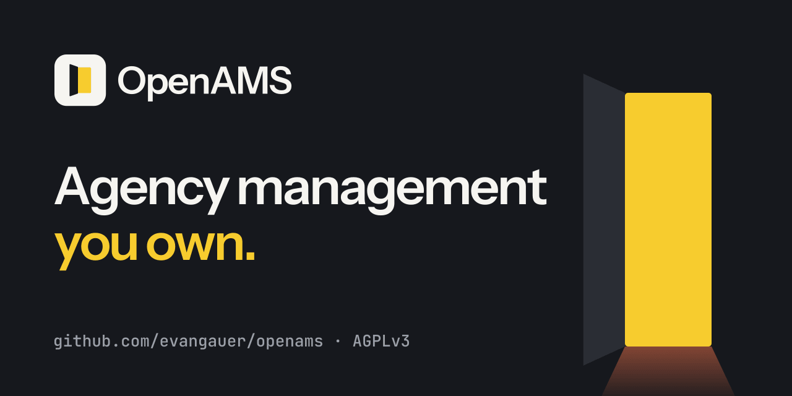
GitHub social preview · 1280×640
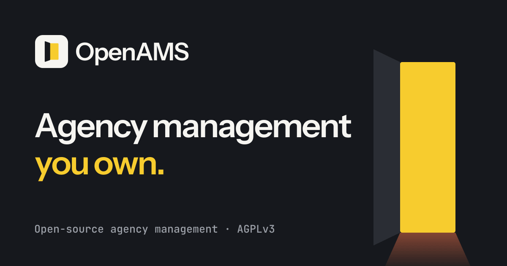
Default OG image · 1200×630 · per-page template in social/og-template.svg
Avatar for X and LinkedIn · 400×400
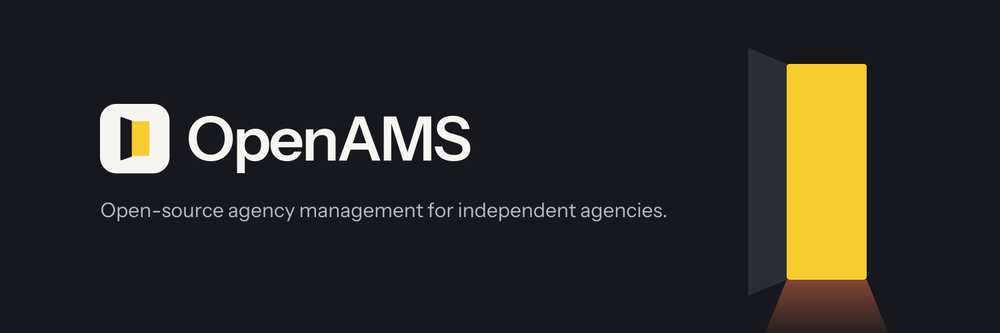
X banner · 1500×500
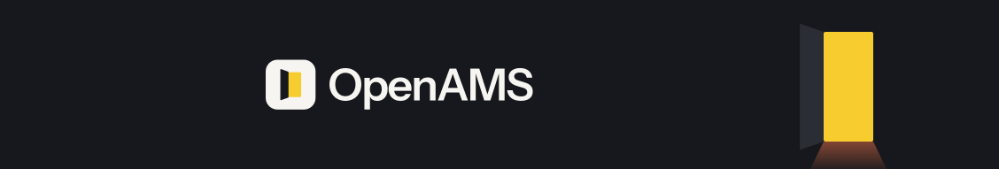
LinkedIn banner · 1128×191
Sundown scenes
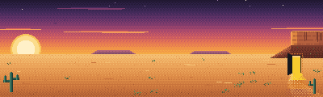
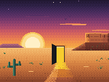
vignette · 160×120
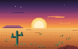
lost (404) · 128×80
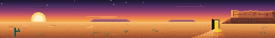
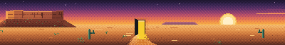
page-band · 400×56 and footer-strip · 400×64
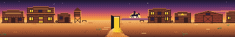
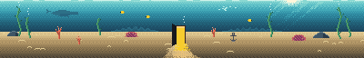
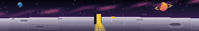
Through the footer's door: footer-town, footer-sea, footer-space · 400×64
Drawn from code in scripts/scenes.mjs. Scale by whole numbers with image-rendering: pixelated; text never sits on a scene.
Works with Relay
OpenAMS works fully without Relay. The badge follows the OpenAMS identity and never outweighs it.